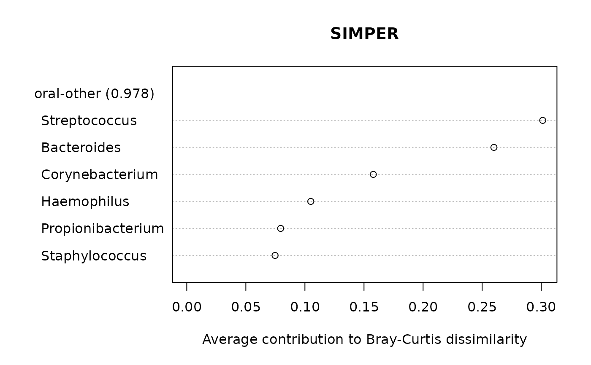

Breaks down the mean Bray-Curtis dissimilarity between each pair of
groups into the contribution of each taxon, to rank the taxa that
differ most between the groups (Clarke 1993). Permutation tests give
each taxon's contribution a p-value. Gives the same results as
vegan::simper() and summary() of it, but runs in parallel C on
sparse tables. Its p-values count ties with the observed contribution,
as Clarke (1993) does, so they are never smaller than vegan's, which
are too small for small groups (see Permutations).
Usage
simper(
counts,
groups,
data = NULL,
margin = 1L,
norm = "none",
p_adjust = "holm",
permutations = 999L,
strata = NULL,
seed = 0L,
cpus = n_cpus()
)Arguments
- counts
A feature table, such as taxa abundances. Accepts the same objects as
beta_div(): a numeric matrix (samples in rows, or in columns withmargin = 2), a sparse matrix from Matrix or slam, or aphyloseq,rbiom, orSummarizedExperimentobject. Sparse tables are never made dense. Values must be non-negative, and every sample must have a non-zero total.- groups
Each sample's group: a vector or factor with one value per sample, matched to the samples in
countsby name when both are named, else in the same order. Or, whendatais given, the name of one of its columns (or a vector with one value per row ofdata). Every distinct value is a group, numbers included; there must be at least two. A factor's unused levels are dropped.- data
Sample metadata: a data frame with one row per sample, holding the columns named in
groupsorstrata. Rows are matched to the samples incountsby row name, and rows for other samples are ignored; without row names, they must be in the same order as the samples. Default:NULL.- margin
The margin containing samples.
1if samples are rows,2if samples are columns. Ignored whencountsis a special object class (e.g.phyloseq). Default:1- norm
Normalize
countsfirst:'none'(asvegan::simper(), which uses the values as given),'percent','chord','hellinger', or'binary', as inbeta_div().'clr'and'rclr'are not allowed: they give negative values, which Bray-Curtis can't use. Default:'none'.- p_adjust
How to adjust each pair's p-values for testing many taxa: one of
stats::p.adjust.methods('holm','hochberg','hommel','bonferroni','BH','BY','fdr', or'none'), matched asstats::p.adjust()matches them. The taxa of each pair are adjusted together, leaving out those with ap_valueofNA. Default:'holm'.- permutations
The number of permutations.
0skips the tests, and givesNAp-values. Default:999. Alternatively, a matrix with one permutation of1:nper row, as frompermute::shuffleSet(), to use instead of random ones: it is cut down to each pair's samples (see Permutations).- strata
Permute samples only within these groups (blocks), for designs such as repeated measures. With
data, the name of one of its columns, or a vector with one value per row ofdata. Withoutdata, a vector with one value per sample, matched to the samples by name when it has names, otherwise in the same order. Default:NULL(free permutation).- seed
An integer seed for the random permutations. The same seed gives the same p-values. Default:
0- cpus
How many parallel processing threads should be used. The default,
n_cpus(), will use all logical CPU cores.
Value
A data frame with one row per pair of groups and taxon, the pairs
in the order of the groups' factor levels (sorted values, for other
vectors), and the taxa of each pair in decreasing order of average.
Its columns are:
pair: The pair of groups, as"a-b".taxon: The taxon's name (its column number, as text, whencountshas no taxa names).average: The taxon's mean contribution to the Bray-Curtis dissimilarity between the two groups' samples. A pair'saverages sum to its mean between-group Bray-Curtis dissimilarity.sd: The standard deviation of the taxon's contribution over the pairs of samples (NAwhen the groups have one sample each).ratio:average / sd. Taxa with a high ratio contribute consistently, not just a lot in a few pairs of samples.mean_a,mean_b: The taxon's mean abundance (afternorm) in the first and second group of the pair.cumsum: The cumulative proportion of the pair's mean dissimilarity that this taxon and those above it account for.p_value: The permutation p-value: the proportion of permutations giving the taxon a largeraverage(see Permutations).NAwithpermutations = 0, and for taxa whoseaverageis 0 (those absent from both groups, or with the same abundance in every sample).p_adjusted:p_valueadjusted for multiple testing withp_adjust, over the taxa of the pair.
The data frame has class "ecodive_simper", only to mark what made it.
Attributes: overall, each pair's mean between-group Bray-Curtis
dissimilarity (named by pair); n_perm, the number of permutations;
p_adjust, the adjustment method; and permutation, "free",
"within strata" or "supplied matrix".
Details
Method
For samples \(i\) and \(j\) with totals \(T_i\) and \(T_j\), the
Bray-Curtis dissimilarity \(\sum_k |x_{ik} - x_{jk}| / (T_i + T_j)\)
is a sum over the taxa, so taxon \(k\) contributes \(c_{ijk} =
|x_{ik} - x_{jk}| / (T_i + T_j)\). For two groups \(a\) and \(b\), a
taxon's average is the mean of \(c_{ijk}\) over the \(n_a n_b\)
pairs of a sample from \(a\) and one from \(b\), and sd their
standard deviation (with denominator \(n_a n_b - 1\)). SIMPER is
defined for Bray-Curtis only.
Permutations
A taxon's p-value (Clarke 1993) comes from shuffling the group labels of
the pair's samples (only within strata, when given), and recomputing
its average. The p-value is \((1 + \#\{average_{perm} \ge
average\}) / (1 + permutations)\), Clarke's (1993) "at least as large"
rule, with permuted averages within a relative \(10^{-7}\) of the
observed one counted as ties (for rounding). Permutations that only swap
samples within groups reproduce the observed average exactly, so they
count. vegan::simper() counts only permuted averages that are strictly
larger, which makes its p-values too small when groups are small: with
two samples per group, a third of all permutations reproduce the
observed average, and a taxon whose observed average is the largest
possible gets \(p \approx 1 / (1 + permutations)\) from vegan, where
its p-value is about 1/3. So ecodive's p-values are never smaller than
vegan's on the same permutations, and are equal for taxa that no
permutation ties. Each pair has random
permutations of its own, drawn from seed and the pair's position, as
the pairwise tests of permanova() and the others have. So p_values
are identical for any number of cpus, but differ by sampling error
from simper() run by hand on the pair's samples with the same seed.
A supplied permutations matrix is cut down to each pair's samples by
following each permutation's cycles, as in the pairwise tests (see
permanova()'s Pairwise comparisons). Give vegan::simper() those
permutations, on the pair's samples, for the same permutations.
The adjusted p-values (p_adjusted) are an addition: vegan::simper()
doesn't adjust. A study of a few groups and hundreds of taxa tests many
hypotheses, so look at p_adjusted, not p_value.
Interpretation: location and dispersion
Warton, Wright & Wang (2012) show that SIMPER confounds differences in
mean abundance (location) with differences in variability (dispersion):
the most variable taxa get the largest contributions even when their
mean abundance is the same in both groups, so a high average doesn't
mean a taxon differs between the groups. Check the groups' dispersions
with permdisp(), compare mean_a with mean_b, and test the
differences of interest taxon by taxon with models of abundance (such as
negative binomial GLMs), rather than reading the ranking as evidence.
The p-values test a change in a taxon's contribution, which a change in
its variance alone can also give.
Speed and memory
A taxon's contribution is 0 for pairs of samples that both lack it, so
each taxon costs about \(n/2\) operations per sample that has it, and
sparse tables are never made dense. The observed sums run in parallel
over taxa, and the permutations in parallel over permutations; sums are
always in the same order, so results are identical for any cpus.
Differences from vegan::simper()
The result is one data frame (as
summary()of vegan's result, with its pairs stacked), with the pair and taxon as columns, and vegan'sava,avb, andcusumnamedmean_a,mean_b, andcumsum.Pairs are named
"a-b"and come in the order of the groups' factor levels; vegan names them"a_b", in the order the groups first appear.vegan permutes all the samples' groups for every pair (a supplied matrix covers all of them), so its p-values for a pair also depend on the other groups' samples. ecodive permutes only the pair's samples, as its pairwise tests do.
p-values count permutations whose
averageties the observed one, as Clarke (1993) does; vegan counts only larger ones (see Permutations).p_adjusted,norm, andstratagiven directly.
Same names in other packages
vegan::simper() has the same name: whichever package was attached
last masks the other. Call ecodive::simper() or vegan::simper() to
be sure.
References
Clarke, K. R. (1993). Non-parametric multivariate analyses of changes in community structure. Australian Journal of Ecology, 18, 117-143. doi:10.1111/j.1442-9993.1993.tb00438.x
Warton, D. I., Wright, S. T., & Wang, Y. (2012). Distance-based multivariate analyses confound location and dispersion effects. Methods in Ecology and Evolution, 3, 89-101. doi:10.1111/j.2041-210X.2011.00127.x
Examples
# Oral (Saliva, Gums) versus other (Nose, Stool) samples.
grp <- c('oral', 'oral', 'other', 'other')
# Four samples are far too few for permutation p-values.
res <- simper(ex_counts, grp, permutations = 0, cpus = 1)
res
#> # A data.frame: 6 × 10
#> # SIMPER
#> pair taxon average sd ratio mean_a mean_b cumsum p_value
#> <chr> <chr> <dbl> <dbl> <dbl> <dbl> <dbl> <dbl> <dbl>
#> 1 oral-other Streptococcus 0.301 0.199 1.51 478 11.5 0.308 NA
#> 2 oral-other Bacteroides 0.26 0.314 0.828 3 306 0.574 NA
#> 3 oral-other Corynebacterium 0.158 0.186 0.847 0 250 0.735 NA
#> 4 oral-other Haemophilus 0.105 0.0664 1.58 134 1.5 0.842 NA
#> 5 oral-other Propionibacterium 0.0795 0.0933 0.852 1 126 0.924 NA
#> 6 oral-other Staphylococcus 0.0747 0.0881 0.848 0.5 118 1 NA
#> # … 1 more column: p_adjusted <dbl>
#> # Attributes: overall, n_perm, p_adjust, permutation
plot(res)

# The averages sum to the mean between-group Bray-Curtis dissimilarity.
sum(res$average)
#> [1] 0.9782491
mean(as.matrix(bray(ex_counts))[1:2, 3:4])
#> [1] 0.9782491